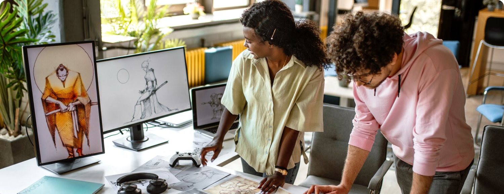
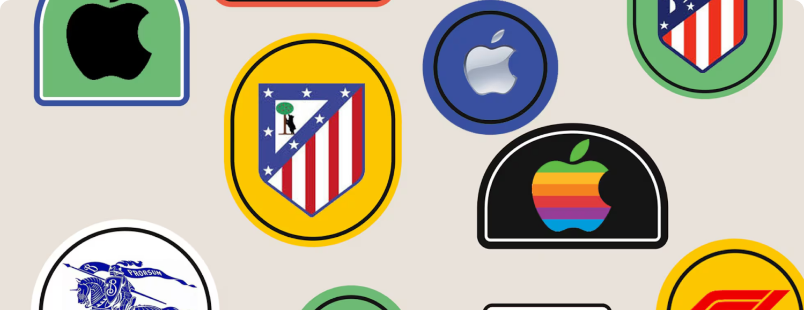

Noticias y Blogs
Ciudades españolas que se miran en el espejo de ‘The New Yorker’
Artistas e ilustradores de una veintena de municipios lanzan iniciativas inspiradas en la mítica revista neoyorquina y diseñan portadas que celebran y critican sus realidades.
Leer más

Estudios artísticos en tiempos digitales
Se abren paso con fuerza los grados que combinan el estímulo de la creatividad en conjunción con las herramientas tecnológicas.
Leer más

Esto es lo que ocurre cuando cambia el logo de una marca
Las marcas forman parte de la cultura. De ahí que los recientes rediseños de la imagen de Jaguar y Burberry hayan generado un revuelo virtual que no hace más que crecer.
Leer más